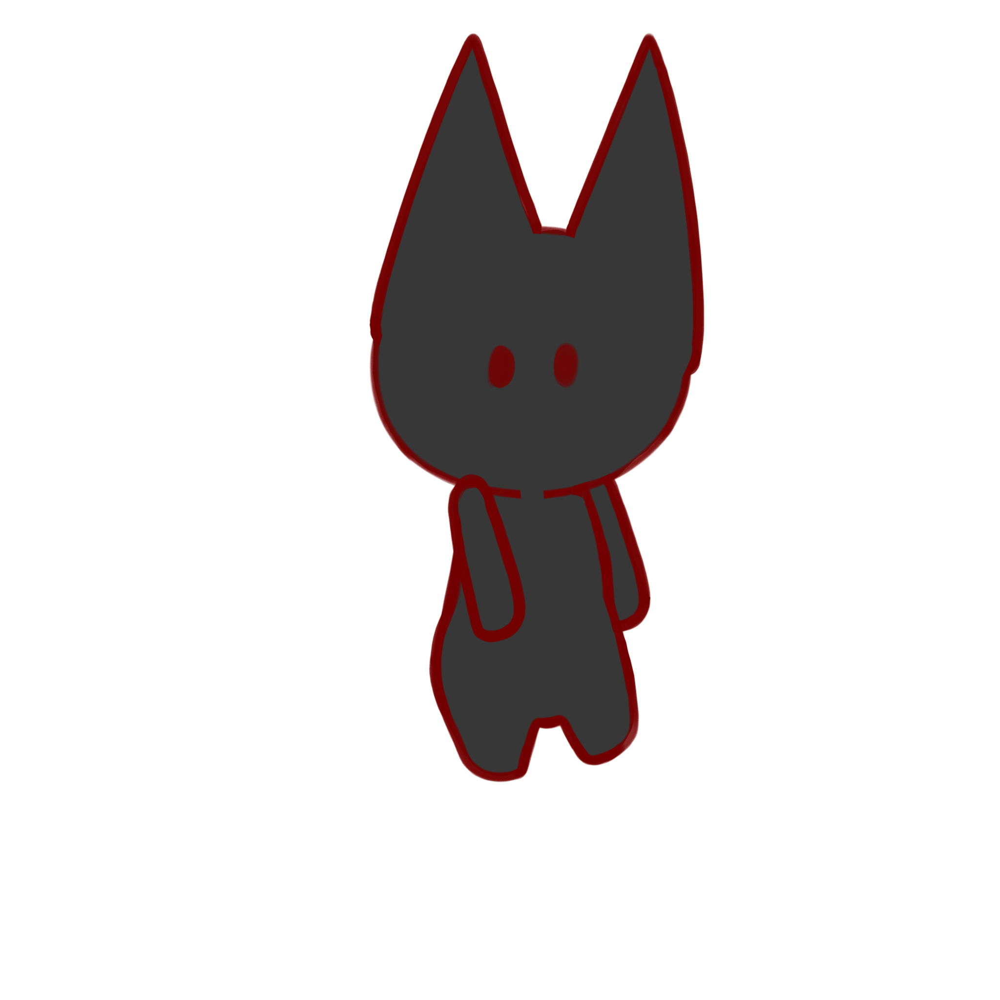

Weight
Happiness
Style

Open DevTools to interact with demos (F12 or right-click > Inspect)
Click "Populate Filters" to write one of each message type to the console, then use the DevTools filter bar to practice each filter technique.
Default levels dropdown in Console toolbar.GigaPet in the filter bar to only show messages containing that text./weight|happiness/i in the filter bar to only show messages containing those terms.File Name in the Messages dropdown in the sidebar to filter by its source.User Messages from sidebar to filter by User Messages.Click "Reproduce Bug" to trigger a bug in the console. Watch from the console and click "Apply Fix" to fix the bug.
Open the Sources panel.
The Sources panel is divided into three main sections:
the Page tab with the file tree on the left,
the Code Editor on the right (or middle),
and the Debugger below the other two (or to the rightmost of them).
Check the Event Listener Breakpoints > Mouse > click to pause execution when a click event is triggered. (Click on any button)
Click on "Pause on Breakpoint" to trigger a line-of-code breakpoint.